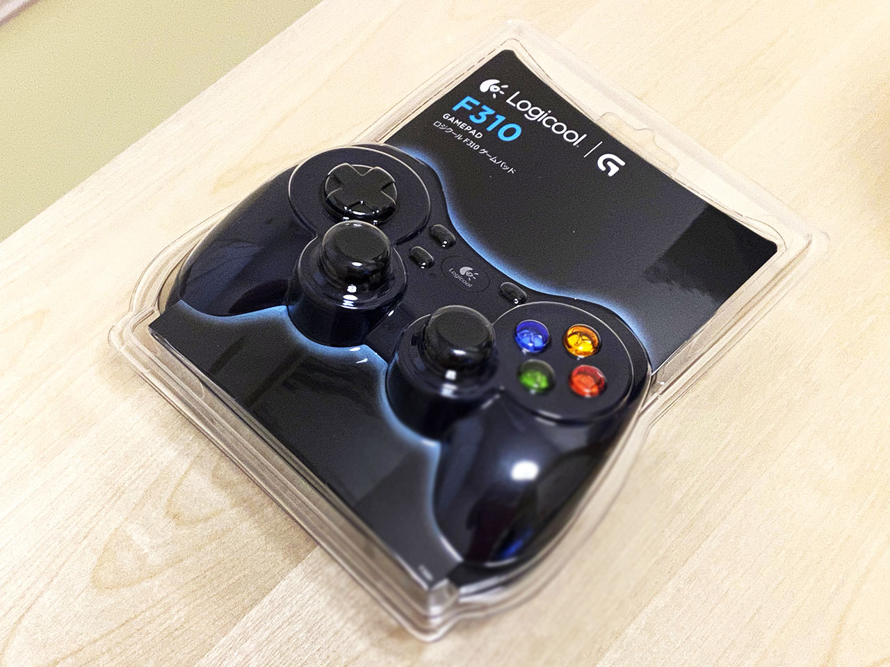
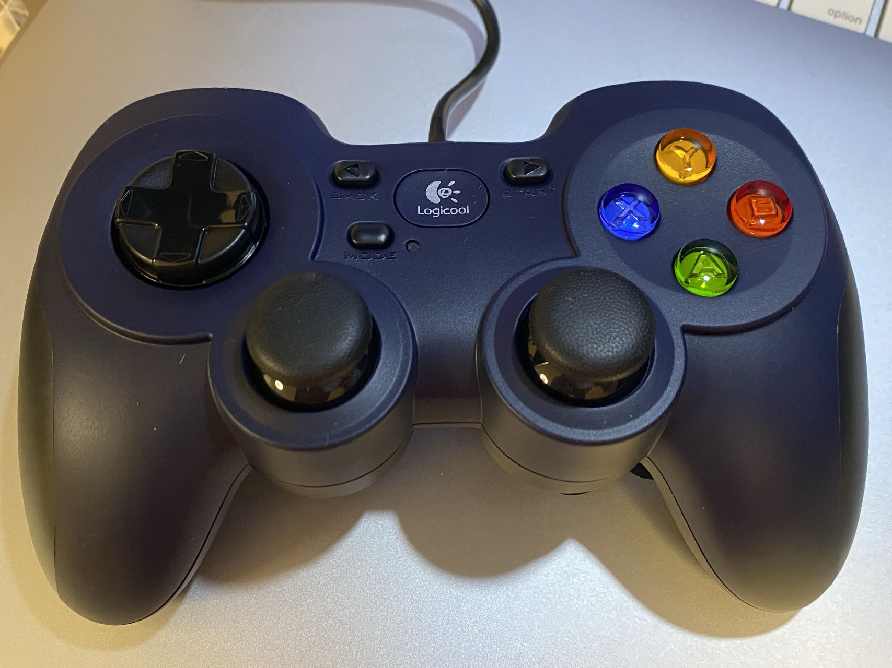

格安 USB ジョイパッド「Logicool G F310R」を買った
PC でグランツーリスモ4をやるにあたり、コントローラが欲しいなーと思い、初めてジョイパッドを買うことにした。
Bluetooth 接続は信じていないので、USB 接続のモノで、PS 風のボタン配置が良いだろうなーと思い、格安の Logicool G F310R というモノを買ってみた。


持った感じ、操作感は PS のデュアルショックとほぼ同じ。あんまりゲームをやらないので、コレでも全然違和感なし。久々に新品のコントローラのカチカチする打鍵感を味わっている。
- FC : VirtuaNES
- SFC : Snes9x
- N64 : Project64
- GC : Dolphin
- GB・GBC・GBA : VBA-M
- PS1 : ePSXe
- PS2 : PCSX2
これらのハード・エミュレータで動作を確認した。
PS2 以外は、キーコンフィグで一つずつボタンを割り当てることで無事動作するようになった。
- VirtuaNES (FC) は、余ったキーを連打ボタンにアサインできた
- N64 の Z トリガーを L2 で代用しているが、若干の違和感ｗ
- N64 の C ボタン類を右アナログスティックで代用しているのも操作性が悪い
ロクヨンだけはロクヨン風のジョイパッドが欲しくなるわ…。なかなかないけど。
PS2 (PCSX2) に関してはキーコンフィグすることなく自動認識した。アナログスティック (ロクヨンでいう 3D スティック) の遊びがちょっと微妙かな。
- 少し倒しただけ → 反応しない
- そこから先 → 急に反応して全倒ししたかのように入力される
という感じで、段階的な入力が出来ていない気がする。「少しだけハンドルを切る」とか「キャラクターをゆっくり歩かせる」とかが出来ない感じ。
X-Input と D-Input とかいうのはよく知らず、X で運用している。Mode ボタンの効き方もよく分かっていないが無視。

とりあえずこのジョイパッドなら、ちょっとゲームをやるレベルなら十分満たしていると思う。